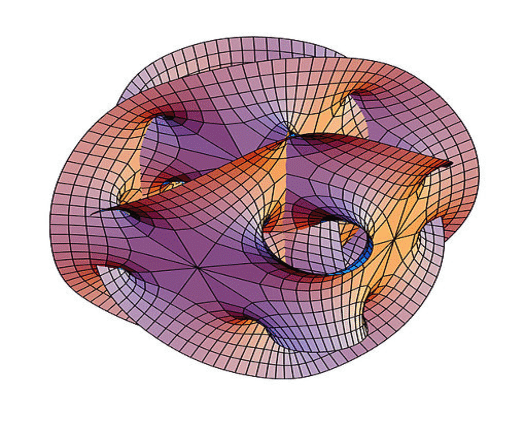

时间地点：近春园西楼三楼报告厅，每周一 19:00 -21:00

| Date | Speaker | Topic | References | |
| Lecture 1 | September 26th | Xiaowei Jiang | The Miyaoka-Yau inequality and uniformisation of higher-dimensional algebraic varieties | [mainRef, Ref2 Ref3] |
| Lecture 2 | October 10th | Xun Lin | Categorical Torelli | [mainRef, ref1 , ref2, ref3] |
| Lecture 3 | October 17th | Minghao Wang | Regularized integrals | [mainref, ref1] |
| Lecture 4 | October 24th | Tianqing Zhu | Quantized symplectic resolutions and the localization theorems | [mainref, ref1, ref2] |
| Lecture 5 | October 31th | Bo Lin | Disk partition function of GLSM | [mainref] |
| Lecture 6 | November 7th | |||
| Lecture 7 | November 14th | Quan Situ | Combinatoric shadows of representationtheories | [mainref] |
| Lecture 8 | November 21th | Nantao Zhang | Application of quasimap theory in enumerative geometry | [mainref, ref1] |
| Lecture 9 | November 28th | |||
| Lecture 10 | December 5th | |||
| Lecture 11 | December 12th | |||
| Lecture 12 | December 19th | |||
| Lecture 13 | December 26th | |||
| Lecture 14 | Jan 2th | |||
| Lecture 15 | Jan 9th |